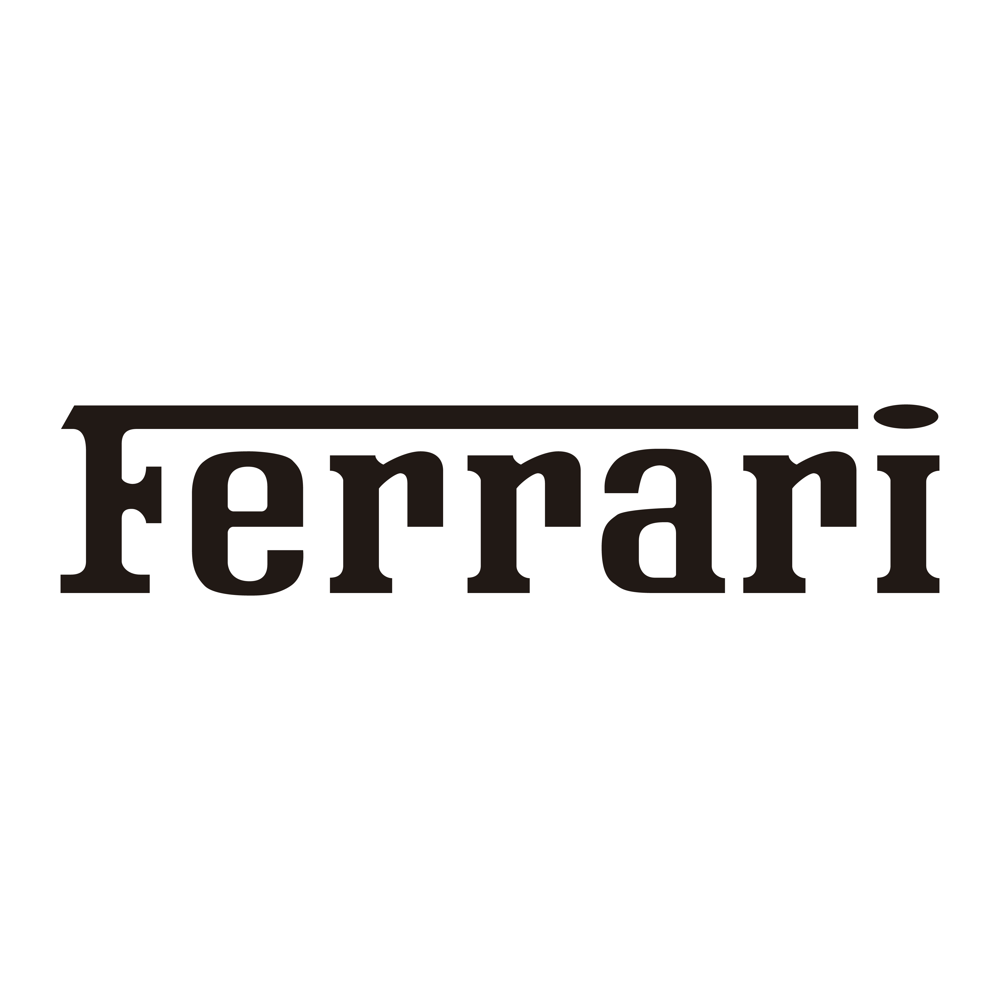

Site da Ferrari
Ferrari
É uma fabricante italiana de carros esportivos de luxo com sede em Maranello , Itália . Fundada em 1939 por Enzo Ferrari, Os carros da Ferrari são conhecidos como símbolos de sucesso, riqueza, velocidade, elegância, esportividade e prestígio. A empresa oferece atualmente uma ampla gama de modelos que inclui vários supercarros , grand tourers e um SUV . Muitas das primeiras Ferraris, datadas das décadas de 1950 e 1960, estão entre os carros mais caros já vendidos em leilão
A História da Ferrari
Enzo Ferrari , ex-vendedor e piloto de corrida da Alfa Romeo , fundou a Scuderia Ferrari , uma equipe de corrida, em 1929. Originalmente destinada a atender cavalheiros e outros pilotos amadores, Em 1945, a Ferrari adotou seu nome atual. O trabalho começou prontamente em um novo motor V12 que alimentaria o 125 S , que foi o primeiro carro da marca, e muitas Ferraris subsequentes. A empresa obteve sucesso no automobilismo quase assim que começou a correr: o 125 S venceu muitas corridas em 1947, e várias vitórias iniciais, incluindo as 24 Horas de Le Mans de 1949 e a Carrera Panamericana de 1951 , ajudaram a construir a Ferrari reputação como uma montadora de alta qualidade.
A Venda da Ferrari para a Fiat
No dia 21 de julho de 1969, a Fiat comprou 50% do capital da Ferrari, depois de um longo processo de dúvidas quanto ao futuro da marca de Maranello. Nos anos 1960, a péssima situação econômica da Europa potencializou as dificuldades de muitos pequenos fabricantes, e a Ferrari não foi excepção.
Ferrari no Automobilismo
A entidade mais antiga da Ferrari, a Scuderia Ferrari , foi criada em 1929 - dez anos antes da fundação da Ferrari propriamente dita - como uma equipe de corrida de Grande Prêmio . Eles eram afiliados à montadora Alfa Romeo , para quem Enzo havia trabalhado na década de 1920. A Alfa Romeo forneceu carros de corrida para a Ferrari, que a equipe então afinou e ajustou de acordo com as especificações desejadas. A Scuderia Ferrari teve muito sucesso na década de 1930: entre 1929 e 1937, eles colocaram em campo pilotos de ponta como Antonio Ascari , Giuseppe Campari e Tazio Nuvolari , e venceram 144 de suas 225 corridas
A primeira vitória da Ferrari em uma série de F1 foi no Grande Prêmio da Inglaterra de 1951 , anunciando seu forte desempenho durante os anos 1950 e início dos anos 1960: entre 1952 e 1964, a equipe levou para casa seis Campeonatos Mundiais de Pilotos e um Campeonato de Construtores. A Ferrari começou a cair no final dos anos 1960, quando foi superada por equipes que usavam o barato e bem projetado motor Cosworth DFV .O desempenho da equipe melhorou acentuadamente em meados da década de 1970 graças a Niki Lauda , cuja habilidade ao volante garantiu à Ferrari um título de pilotos em 1975 e 1977; sucesso semelhante foi alcançado nos anos seguintes por nomes como Jody Scheckter e Gilles Villeneuve
Após outra seca nas décadas de 1980 e 1990, a Ferrari teve uma longa seqüência de vitórias na década de 2000, em grande parte por meio do trabalho de Michael Schumacher . Depois de assinar com a equipe em 1996, Schumacher deu à Ferrari cinco títulos consecutivos de pilotos entre 2000 e 2004; isso foi acompanhado por seis títulos consecutivos de construtores, começando em 1999. A Ferrari foi especialmente dominante na temporada de 2004 , onde perdeu apenas três corridas. Atualmente ela continua sendo uma das forças na F1 conseguindo vices e grandes vitórias com seus pilotos
Ferrari em Le Mans
Muito se fala do sucesso da equipe de Enzo na F1, mais a corrida que ele mais gostava de competir era a incrivel e mitica 24 horas de Le Mans. Entre 1958 e 64, a equipe venceu a prova de Sarthe por seis vezes. Em 65, um outro carro da marca ainda conquistou a vitória, porém, sob a operação da Nart.
Alguns modelos utilizados pela Ferrari nesta época se tornaram verdadeiros clássicos. Em especial a linha 250, com suas variantes. A começar pela ultra elegante 250 Testa Rossa, que levou a edição de 58. A partir de 66, a Ford emplacaria uma sequência com seu GT 40, em uma história bastante documentada no embate direto com os italianos.
Após essa fase encantada da Ferrari em Le Mans, ela começou a desenvolver outros projetos oque deixaram ela 50 anos sem tentar ganhar na classe geral em Le mans, mais em 2023 isso mudou, a Ferrari fez seu incrivel hypercar para o campeonato do WEC desse ano, e adivinha, venceram Le Mans de um jeito incrivel, sendo a unica que durou sendo um dos carros com mais durabilidade, e não foi uma vitória pequena, mais em 2023 Le Mans fez seu centenario, 100 anos da primeira corrida lá